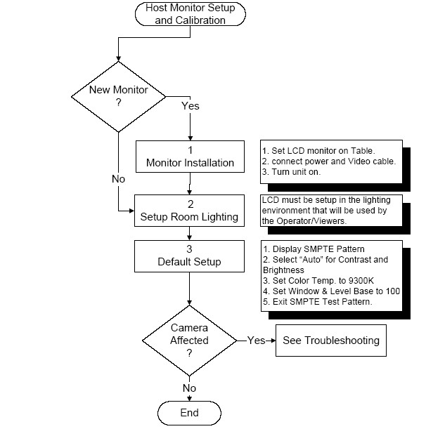
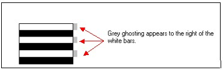
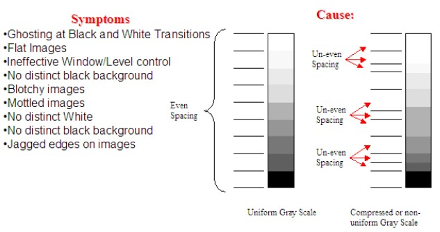

Operating Documentation
Direction 5167277-800, Rev# 8
5167277-800 - FX/Xtream SW & Upgrade Procedures
Operating Documentation |
| Last Revised on: | November 7, 2006 |
This procedure covers the following topics:
Section 1 - General Monitor Information (cleaning, warm-up time, specifications, image persistence)
Section 2 - Monitor Controls and Informational Messages
Section 3 - Host LCD Monitor Setup and Calibration
| Avoid using any cleaning solution or glass cleaner! When cleaning, press lightly against the LCD monitor surface to avoid damage to the screen. | |
Clean the LCD monitor surface with a lint-free, non-abrasive cloth and ONLY water.
For optimum performance, allow 20 minutes for warm-up.
Temperature: 5 - 35 °C (41 - 95 °F)
Humidity: 30 - 80%
Elevation: 0 - 10,000 feet
Temperature: -10 to +60 °C (14 - 140 °F)
Humidity: 10 - 85%
Elevation: 0 - 40,000 feet
9.7 kg (21.4 lbs)
Image Persistence is when a residual or “ghost” image of a previous image remains visible on the screen. Unlike CRT monitors, LCD monitors’ image persistence is not permanent, but constant images being displayed for a long period of time should be avoided.
To alleviate image persistence, turn off the monitor for as long as the previous image was displayed. For example, if an image was on the monitor for one hour and a residual image remains, the monitor should be turned off for one hour to erase the image. NEC incorporates the use of the OFF TIMER feature to blank the screen after a period of none use. Do adjust the TIMER feature.
OSM™ (On-Screen Manager) control buttons on the front of the monitor function as follows (see Table 1):
To access OSM menu, press any of the control buttons ( -+).
-+).
To rotate OSM between Landscape and Portrait modes, press the RESET button.
| NOTE: | OSM must be closed in order to change signal input and rotate. |
Table 1: Monitor Control Buttons
| Monitor Buttons | Menu |
| EXIT | Exits the OSM controls. |
| Exits to the OSM main menu. | |
| < > (Control) | Moves the highlighted area left/right to select control menus. |
| Moves the highlighted area up/down to select one of the controls. | |
| - + (Adjust ) | Moves the bar left/right to increase or decrease the adjustment. |
| Active Auto Adjust function. | |
| Enter the Sub Menu. | |
| SELECT/1↔2 | Moves the highlighted area of main menu right to select one of the controls. |
| RESET | Resets the highlighted control menu to the factory setting. |
| Resets the highlighted control to the factory setting. |
| NOTE: | When RESET is pressed in the main and sub-menu, a warning window will appear allowing you to cancel the RESET function by pressing the EXIT button. |
 - DISPLAY MODE: Provides
information about the current resolution display and technical data
including the preset timing being used and the horizontal and vertical
frequencies.
- DISPLAY MODE: Provides
information about the current resolution display and technical data
including the preset timing being used and the horizontal and vertical
frequencies.
Increases or decreases the current resolution. (Analog input only)
- MONITOR INFO: Indicates the model and serial numbers of your monitor.
OSM™ Warning: OSM Warning menus disappear with Exit button.
NO SIGNAL: Gives a warning when there is no signal present. After power is turned on or when there is a change of input signal or video is inactive, the No Signal window will appear.
RESOLUTION NOTIFIER: Gives a warning of use with optimized resolution. After power is turned on or when there is a change of input signal or the video signal doesn’t have proper resolution, the Resolution Notifier window will open. This function can be disabled in the TOOL menu.
OUT OF RANGE: This function gives a recommendation of the optimized resolution and refresh rate. After the power is turned on or there is a change of input signal or the video signal doesn’t have proper timing, the Out Of Range menu will appear.
CHECK CABLE: This function will advise you to check all Video Inputs on the monitor and computer to make sure they are properly connected.
The host LCD setup MUST be done in the following order. See flowchart in Illustration 1.
Illustration 1: Host LCD Setup

LCD’s are extremely susceptible to Viewing Angle. All adjustments and image comparisons should be done from exactly the same viewing angle in all directions. Sit directly in front of the monitor at all times.
In the review area and operator workspace area, verify that the ambient lighting conditions are adjusted to a minimum level. In the operator workspace area, there should be only sufficient light for safely operating the system.
In the review area and operator workspace area, verify that light-boxes are not emitting light, or are properly masked, when not displaying film. This will be a source of excessive glare.
Contrast, Brightness and the Window and Level base values must be done with the SMPTE pattern displayed on the monitor. See LCD Video Monitor Setup.
The SMPTE pattern MUST always be displayed on the monitor when Contrast and Brightness adjustment is made. Failure to make these adjustments with the SMPTE pattern displayed can impact Image Quality and camera filming/printing, which will result in poor black level or customer complaints related to poor display setup. Refer to the Vendor manual that came with the new LCD for detailed operation of the monitor controls.
Slower refresh rates improve the LCD's ability to display a black and white image. The faster the screen refresh rate, the more "slew" you get in the LCD screen (film plates). This is advantageous for color displays but detrimental to black and white images.
The impact of faster refresh rates on black and white anatomical images appears to be at areas of extreme black and white transition within the images. See Illustration 2.
Illustration 2: Effect of Fast Refresh Rate (above 60 Hz)

Most LCDs set this up automatically to adjust to the video card. If you think that setting the monitor to 60Hz may improve your display of black and white images you will need to read the instructions that came with the monitor and determine how to manually set the refresh rate to 60Hz. This will result in sacrificing the smoothness of any color object on the screen. Using the monitor's controls, set the LCD monitor at a frequency of 60Hz
| NOTE: | This should not be confused with site power requirements. |
Gamma is preset from the factory on LCD monitors. However, the Gamma value used is designed to optimize the LCD for PC use. This setting provides a high amount of color saturation, which is what most people prefer when viewing color on an LCD Display.
Setting Gamma to the correct level is important to ensure a uniform Gray Scale for viewing of black and white images. If the gamma is not set properly, the Gray scale will be compressed and uneven, as shown in . This will result in "blotchy" images, poor contrast, Window and Level control issues, and jagged edges at the transitions of pure white and pure black.
Illustration 3: Effect of Incorrect Gamma Setup on the Gray Scale

Setting gamma (other than using the default value present in the monitor circuitry) is also a function of most video display boards. Each vendor (ATI, Nvidia, etc.) have their own way of adjusting gamma at the display board. There is no known procedure for setting up the video display board at this time. To optimize gamma on an LCD, the video display board Gamma Value should be set below 1.0 (optimally between .90 and .95).